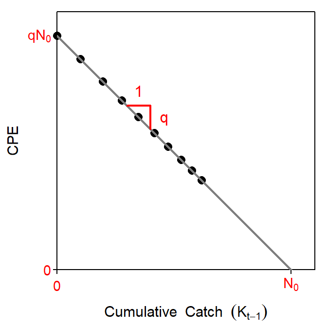

The number of individuals in a population at some initial time, called initial population size, can be estimated by the sum of sequential catches required to remove all fish from the population. However, the removal of all fish from a population is costly, in monetary, human, and natural resource terms. Fortunately, estimates of the initial population size can be made by examining how the removals of fish, either through the catch of a fishery or by experimental monitoring, affect the relative abundance of fish remaining in the population (Hilborn and Walters 2001). These methods are generally called depletion or removal methods as they rely on observing populations where the stock of fish is being depleted by removals of fish. In this reading, two depletion methods (Leslie and k-Pass) used for estimating the population size are developed for a closed population with no mortality, recruitment, immigration, or emigration.
The initial number of fish in a population is denoted by \(N_{0}\). The number of fish remaining in the closed population at the start of the \(t\)th removal is the initial population size minus the cumulative catch prior to the \(t\)th removal, \(K_{t-1}\). Thus,
\[ N_{t} = N_{0} - K_{t-1} \quad \quad \text{(1)} \]
where \(K_{t-1}\) is
\[ K_{t-1} = C_{1} + C_{2} + \ldots + C_{t-1} = \sum_{i=1}^{t-1} C_{i}, \]
\(C_{i}\) is the catch for the \(i\)th removal, \(t>1\), and \(K_{0}=0\). In addition, assume that catch-per-unit-effort (CPE) in the \(t\)th removal event, \(\frac{C_{t}}{f_{t}}\), is proportional to the extant population at the time of the \(t\)th removal event, \(N_{t}\), i.e.,
\[ \frac{C_{t}}{f_{t}} = qN_{t} \quad \quad \text{(2)} \]
where \(f_{t}\) is the level of effort for the \(t\)th removal and \(q\) is the constant catchability coefficient. The catchability coefficent represents the fraction of the population that is removed by one unit of fishing effort. The Leslie method model is derived by substituting Equation 1 into Equation 2 for \(N_{t}\) and simplifying,
\[ \frac{C_{t}}{f_{t}} = q(N_{0} - K_{t-1}) \quad \quad \text{ } \]
\[ \frac{C_{t}}{f_{t}} = qN_{0} - qK_{t-1} \quad \quad \text{(3)} \]
The last expression of Equation 3 is in the form of a linear model (Figure 1) where \(\frac{C_{t}}{f_{t}}\) is the response variable, \(K_{t-1}\) is the explanatory variable, \(-q\) is the slope, and \(qN_{0}\) is the intercept. Thus, the negative of the slope of this model is \(\hat{q}\), an estimate of the catchability coefficient. The estimated initial population size, \(\hat{N_{0}}\), is found by dividing the estimated intercept by \(\hat{q}\). Visually, \(\hat{N_{0}}\) is the intercept of the regression line with the x-axis, or in words, the total cumulative catch such that the CPE is equal to zero (Figure 1).

Figure 1: Idealized plot of the decline in the index of abundance with increasing cumulative catch. Visual representations of the catchability coefficient, \(q\), and initial population size, \(N_{0}\) are shown.
Hilborn and Walters (2001) noted that the index of abundance for the Leslie method can be either catch or CPE. Furthermore, they note that the data used as an index of abundance in the Leslie method can be independent of the data used to measure cumulative catch. Thus, for example, the index of abundance could be derived from acoustic surveys whereas the cumulative catch could be recorded from fishing trapnets.
Confidence intervals for \(q\) and \(N_{0}\) can be derived from the regression results. The confidence interval for \(q\) is a straightforward calculation of the confidence interval for the slope. However, the confidence interval for \(N_{0}\) is not straightforward as it is estimated by the ratio of two random variables. However, Krebs (1999 p. 82) provided a formula for computing the standard error of \(\hat{N_{0}}\). With these standard errors, confidence intervals for \(q\) and \(N_{0}\) are computed in the standard way assuming normal distributions.
Ricker (1975) suggested a modification to Equation 3 such that \(K_{t-1}\) is replaced with \(K_{t}\), where \(K_{t}\) is equal to \(K_{t-1}\) plus half of the current catch, \(C_{t}\), or
\[ K_{t} = K_{t-1} + \frac{C_{t}}{2} \]
Thus, Equation 3 becomes
\[ \frac{C_{t}}{f_{t}} = qN_{0} - qK_{t} \quad \quad \text{(5)} \]
and \(q\), \(qN_{0}\), and \(N_{0}\) are estimated with regression methods as with Equation 3. This modification will typically (but not always) result in slightly higher estimates of \(N_{0}\).
The Leslie method for estimating the initial population size is built upon six assumptions related to the fish and fishery. These assumptions are
In addition, the usual assumptions of simple linear regression also apply.
The two most likely assumption violations are that the population is not closed and the catchability is not constant. Any recruitment, natural mortality, immigration, or emigration will likely introduce serious errors to the abundance estimate (Seber 1982). Influxes (e.g., recruitment and immigration) tend to dampen the decline of CPE with cumulative catch resulting in an underestimated catchability coefficient and overestimated initial population size. In contrast, natural “removals” (e.g., mortality and emigration) tend to steepen the decline of CPE with cumulative catch, resulting in an overestimated catchability and underestimated initial population size. Errors associated with an open population are typically minimized by concentrating on small, relatively confined areas (e.g., bays, confined stretches of streams) or, more commonly, short periods of time. Unfortunately, violations of the closed population assumption are not readily detectable from catch and effort data.
If the population is thought to be closed, then inconstant catchability is probably the greatest potential source of error in applying the Leslie method (Ricker 1975). Catchability may change with time because the individuals that are more readily captured have already been captured and animals with lower individual catchabilities remain in the population (Hilborn and Walters 2001), or because of some environmental factor (e.g., increases in movements due to temperature, etc.; Seber (1982)). Hilborn and Walters (2001) suggest that lowering catchability with time will result in an overestimate of catchability and an underestimate of the initial population size. The presence of large numbers of animals with low catchability may be indicated by a flattening of the CPE versus cumulative catch plot; i.e., a non-linear relationship between CPE and cumulative catch.
Violations of the other assumptions will result in the Leslie model not fitting or being inappropriate for the collected data. For example, if not all fish are equally vulnerable or the units of effort are dependent, then CPE will not be directly proportional to \(N_{t}\) (i.e., Equation 2 is inappropriate). Alternatively, if too few fish are caught such that the CPE is not substantially reduced, then the relationship between CPE and \(N_{t}\) will likely not exist.
In situations where fewer than 2% of the population will be removed by the catches, then the DeLury method should be used. In most situations, it is unlikely that it will be known in advance whether 2% of the population will be removed or not. Thus, it is common to fit both the Leslie and DeLury methods to the data. The resultant estimates of \(q\) and \(N_{0}\) should be compared; if the estimates are substantially different then potential reasons for the differences should be explored (including what proportion of the population was removed).
Methods for performing the Leslie method in R are described in Section 10.1 of Ogle (2016).[^IFARScripts]
Another depletion method for estimating population size is the k-Pass removal method. In this method, a closed population is repeatedly sampled \(k\) times1 with the same amount of effort. On each sampling “pass,” the number of individuals captured are recorded, and the individuals are physically removed from the population. With certain assumptions, the overall population size can be estimated from the number of animals successively removed.
Under the assumptions that the population is closed (except for the removal of animals at each pass) and that the probability of capture for an animal (defined as \(p\)) is constant for all animals and from sample to sample, then the likelihood function for the vector of successive catches, \(\vec{C}\), given the population size, \(N_{0}\), and probability of capture is
\[ L(\vec{C}|N_{0},p) = \frac{N_{0}!p^{T}q^{kN_{0}-X-T}}{(N_{0}-T)!\prod_{i=1}^{k}C_{i}!} \]
where \(q=1-p\) is the probability of escape, \(C_{i}\) is the number of animals captured in the \(i\)th removal period, \(k\) is the total number of removal periods, \(T=\sum_{i=1}^{k}C_{i}\) is the total number of individuals captured, and \(X=\sum_{i=1}^{k}(k-i)C_{i}\) . Unfortunately, the maximization of this likelihood function is not “neat” and is beyond the scope of this vignette. Fortunately, Zippin (1956) and Zippin (1958) showed a method for iteratively solving for \(q\) and \(N_{0}\). Carle and Strub (1978) later showed a slight modification of Zippin’s method where the smallest \(N_{0}\geq T\) that solves
\[ \left(N_{0}+\frac{1}{2}\right)\left(kN_{0}-X-T\right)^{k} - \left(N_{0}-T+\frac{1}{2}\right)\left(kN_{0}-X\right)^{k} \geq 0 \quad \quad \text{(6)} \]
is the maximum likelihood estimate.
Carle and Strub (1978) note that the general k-Pass removal method will fail to provide an appropriate estimate of population size if \(X\leq\frac{T(k-1)}{2}\). This failure criterion is equal to \(X\leq T\) or, for example, \(C_{1}\leq C_{3}\) when \(k=3\). Thus, the method outlined above will fail if the number of fish removed on the last pass is greater than or equal to the number of fish removed on the first pass. In other words, similar to the Leslie and DeLury methods, the k-pass removal methods will perform appropriately only if the catches are substantially reduced by prior removals.
An alternative iterative method that will not fail and has lower bias and standard error was proposed by Carle and Strub (1978). This method takes a Bayesian approach and “weights” the likelihood function by a prior beta distribution (with parameters \(\alpha\) and \(\beta\)). Their method reduces to finding the smallest \(N_{0}\geq T\) that solves
\[ \frac{N_{0}+1}{N_{0}-T+1}\prod_{i=1}^{k}\frac{kN_{0}-X-T+\beta+k-i}{kN_{0}-X+\alpha+\beta+k-i} \leq 1 \quad \quad \text{(7)} \]
Once \(N_{0}\) is found by iteratively solving the equation above then,
\[ SE_{\widehat{N_{0}}} = \sqrt{\frac{\widehat{N_{0}}T(\widehat{N_{0}}-T)}{T^{2}-\widehat{N_{0}}(\widehat{N_{0}}-T)\frac{(kp)^{2}}{q}}} \]
and \(\hat{p}\) and \(SE_{\hat{p}}\) as defined above. Typically, if no prior information about \(p\) exists then \(\alpha=\beta=1\) is used.
Finally, it should be noted that all of the k-pass removal methods are highly susceptible to the common violation of the equal catchability assumption. Seber (1982) notes that “if there is considerable variability in catchability, the more catchable individuals will be caught first, so that the average probability of capture will decrease from one trapping to the next and [\(\widehat{N_{0}}\)] will underestimate [\(N_{0}\)].”
This should not be confused with \(K\), the cumulative catch, in the Leslie method.↩︎